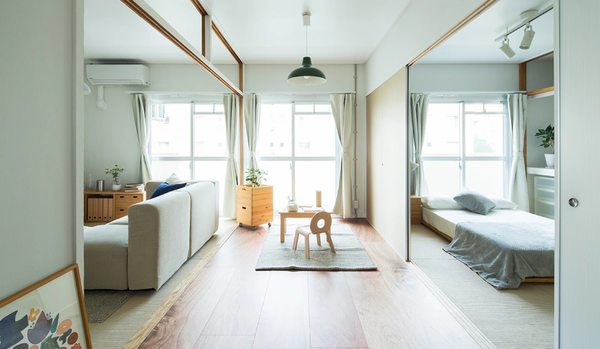
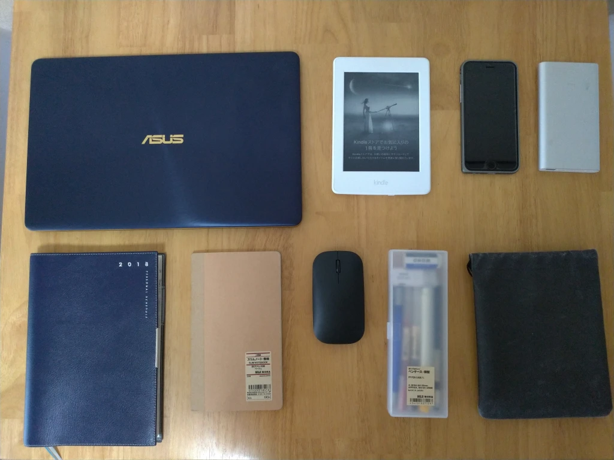
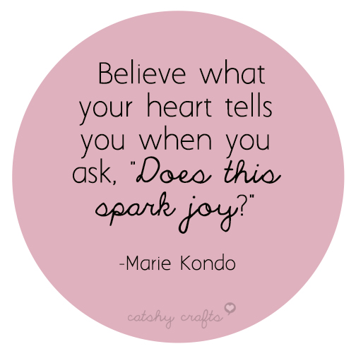

DỌN DẸP: GIỮ LẠI VÀ TỪ BỎ

Liên quan tới lối sống tối giản, mình có đăng một vài bài về chủ đề “vứt bỏ” (hay là từ bỏ) và cũng nhận được nhiều ý kiến từ phía người đọc. Ở bài viết này, mình tiếp cận lối sống tối giản theo một cách khác, không phải là từ bỏ, mà là giữ lại.
Mình hoàn toàn đồng ý với ý kiến rằng vứt bỏ đồ vật sẽ giúp cuộc sống của chúng ta trở nên hạnh phúc hơn. Tuy nhiên có lẽ đối với một vài người, cụm từ “vứt bỏ” vẫn mang một ý nghĩa tiêu cực. Ví dụ như khi ta nói vứt bỏ những món đồ kỉ niệm thì hẳn là sẽ rất nhiều người phản đối.
Bản thân mình đôi lúc cũng vì quá chú tâm vào việc vứt bỏ mà quên mất rằng mục đích chính của dọn dẹp không phải là vứt bỏ.
Vậy mục đích của việc dọn dẹp là gì?
Mình có đọc một cuốn sách tâm lý liên quan đến việc dọn dẹp, được viết bởi tác giả người Nhật, Daigo. Ở Nhật anh này (khá trẻ, mới khoảng 30 tuổi) rất nổi tiếng và được biết tới với cái tên Mentalist Daigo. Trong cuốn sách, có một đoạn viết phân tích về tâm lý con người khi nói về việc lựa chọn.
“Khi đọc báo, đọc các tin tức thì hiển nhiên chúng ta luôn để ý và tìm tòi những bài viết có tiêu đề thú vị. Chẳng có ai rảnh rỗi đến mức tìm những bài báo không thú vị, tiêu đề chán ngắt, loại bỏ nỏ trước rồi mới đọc những bài còn lại. Đi ăn ở nhà hàng cũng vậy. Chúng ta luôn tìm kiếm các nhà hàng được nhiều review đánh giá, chứ hiếm khi ưu tiên tìm kiếm những nhà hàng không ngon rồi loại trừ nó trước. Tuy nhiên, khi dọn dẹp, tâm lý chúng ta lại đi ngược lại với những dẫn chứng phía trên. Chúng ta có xu hướng tìm kiếm những đồ vật không cần thiết, không còn có giá trị sử dụng và đem vứt nó đi.”
Qua đó, tác giả muốn nhấn mạnh rằng:
Dọn dẹp là quá trình lựa chọn những đồ vật quan trọng và thực sự cần thiết cho cuộc sống hiện tại. Sau đó, những đồ vật không cần thiết còn lại sẽ trở thành đồ vật mà bạn có thể vứt bỏ – Mentalist Daigo
Cuốn sách “The More of Less” của Joshua Becker cũng có câu nói với ý nghĩ tương tự:
"Minimalism is the intentional promotion of the things we most value and the removal of anything that distracts us from it" – Joshua Becker

Dịch sang tiếng Việt đại khái là:
“Tối giản là sự ưu tiên giữ lại những thứ quan trọng và đồng thời vứt bỏ những thứ gây phiền nhiễu, cản trở”.
Lối sống tối giản = Giữ lại những thứ quan trọng = Vứt bỏ thứ không cần thiết.
Với nhiều người, và đôi khi cả chính bản thân mình, có lúc sẽ quên mất cái cụm nằm ở phía giữa:
Lối sống tối giản = Giữ lại những thứ quan trọng= Vứt bỏ thứ không cần thiết
Và nó sẽ thành:
Tối giản = Vứt bỏ
Làm thế nào để tìm được những thứ thực sự quan trọng?
Đứng trong căn phòng bừa bãi tràn ngập đồ đạc thì hẳn là rất khó mà có thể lựa chọn những thứ quan trọng ngay lập tức. Ở đây, mình muốn chia sẻ hai phương pháp mà mình thấy nó cực kì hữu dụng và chính bản thân mình cũng đã áp dụng nó.
1. Phương pháp “một ngày lý tưởng”
Mình học được phương pháp này từ trong cuốn sách mình có trích dẫn phía trên của Mentalist Daigo.
Việc đầu tiên chúng ta nên làm đó chính là rời khỏi căn phòng bừa bộn, tìm đến một quán cà phê hay thư viện nào đó. Ở đây chúng ta có thể thưởng thức cốc cà phê hay cốc trà và hưởng thụ không khí yên tĩnh và sang chảnh.
Sau đó, bạn viết ra giấy “một ngày lí tưởng” của bạn. “Một ngày lí tưởng” tức là “Hàng ngày nếu làm những việc này thì sẽ thật là tuyệt”. Và những món đồ xuất hiện trong một ngày lí tưởng của bạn hiển nhiên sẽ là những món đồ thực sự quan trọng với bạn. Dưới đây là bảng liệt kê mẫu một ngày lí tưởng:

Tất nhiên nhìn qua bảng liệt kê này bạn sẽ có nó có vẻ hơi chung chung, nhưng đây chỉ là ví dụ tiêu biểu. Còn đây là một ngày lí tưởng của mình:

Mình hay đi ra ngoài nên với việc liệt kê những hành động cụ thể cho một ngày lí tưởng thì mình sẽ xác định được lúc đi ra ngoài mình làm gì, từ đó giảm bớt đồ đạc bên trong cặp.

Cũng với phương pháp này thì bạn có thể áp dụng theo cách khác, ví dụ như nghĩ đến lúc “mình thấy vui nhất khi làm gì”, hoặc là ghi lại những hành động, công việc đã làm trong ngày hôm nay. Những món đồ xuất hiện khi bạn đang liệt kê những hành động này sẽ là thứ quan trọng mà bạn thực sự cần.
2. Phương pháp KonMari
Nếu bạn lười ra ngoài nhưng lại có quyết tâm muốn dọn dẹp đồ đạc ngay lập tức thì có thể tìm hiểu phương pháp KonMari của Kondo Marie, tác giả của cuốn sách “The Life-Changing Magic of Tidying Up” (Nghệ thuật bài trí của người Nhật).

Phương pháp KonMari yêu cầu bạn dọn đồ đạc trong một lần duy nhất, dọn đồ theo từng loại chứ không phải địa điểm. Bắt đầu với đống quần áo. Bạn sẽ phải lôi hết tất cả quần áo, bất kể thứ đang treo, hay ở trong ngăn tủ. Phương pháp này nhấn mạnh việc giữ lại những thứ đem lại niềm vui trong cuộc sống. Niềm vui ở đây được dịch sang từ tiếng Nhật “Tokimeki” và tiếng Anh “Spark Joy”. Bạn cầm từng chiếc áo, quần lên và nếu như nó đem lại cho bạn “niềm vui” tức là món đồ đó quan trọng với bạn, ngược lại những thứ không đem lại niềm vui đồng nghĩa với việc bạn có thể vứt bỏ nó đi.

Đọc đến đây mình đoán nhiều người sẽ nghĩ rằng “gì mà niềm vui chứ, nghe chả thực dụng tí nào”. Nhưng tin mình đi, lần đầu khi đọc mình cũng có suy nghĩ như vậy. Tuy nhiên khi áp dụng phương pháp này, mình cảm giác như bản thân đang đối mặt với những món đồ, giống như đối mặt với ai đó vậy. Cũng chính nhờ phương pháp này mà mình biết nâng niu, giữ gìn đồ vật hơn. Và phương pháp này không chỉ áp dụng cho quần áo mà còn rất nhiều món đồ khác, ví dụ như sách vở, tài liệu hay thậm chí là món đồ kỉ niệm.
Đã có khá nhiều bài viết về phương pháp KonMari và mình xin phép được trích dẫn link một vài bài và bạn có thể tìm hiểu ở đó. Hoặc đơn giản là bạn có thể đọc cuốn sách đó và thử áp dụng cho chính căn phòng của mình.
"Thay vì cứ băn khoăn về thứ phải bỏ đi, sao mình không chọn xem thứ gì nên giữ lại?"" – Kondo Marie
Link tham khảo về phương pháp KonMari


COMMENT
Tarobam 1 ngày trước
Ah the memories of watching Shelter for the first time, and now to re-live the feeling with Hiyumi singing it.
Justin Y. 1 ngày trước
Imagine traveling back decades and explaining to him that in the future, hundreds of thousands of people will be listening to his song on a supercomputer with a picture of a Japanese cartoon.
DigiNeko 2 ngày trước
Classic Masterpiece.